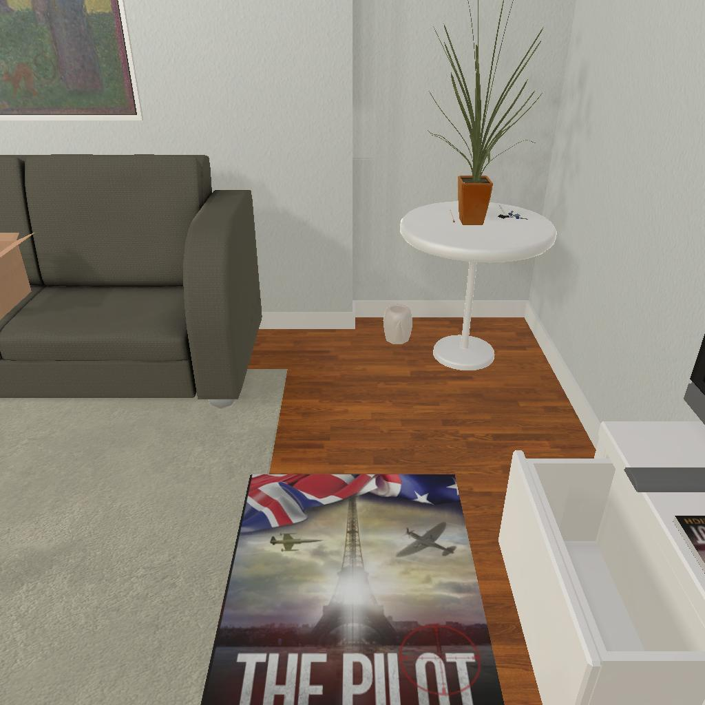

---------------------------------------------------------task: 5---------------------------------------------------------
--------------------------------------------------------------------------------------------------------------------------------------------------------------------
--------------------------------------------------------------------------------------------------------------------------------------------------------------------
Step:--------------------------------------------------------------------------10-------------------------------------------------------------------------------
----------------------------------------
VLM Prompt:
**Task**
Please perform as an embodied AI agent. Our final objective is to put some book on armchair. Below is the plan for completing the task, the current observation, alongside historical data and admissible actions for the next step. Please determine the best action for the next step!
**Plan**
Below is a detailed step-by-step plan to complete the task.
1. Find a book.
2. Pick up the book.
3. Find an armchair.
4. Place the picked-up book on the armchair.
5. Find another book.
6. Pick up the book.
7. Return to the previous armchair.
8. Place the picked-up book on the armchair with the first book.
**Current Observation**
Displayed is an image capturing the current position of the agent.
**History Information**
Displayed are the previous observations with their corresponding actions.
State 0:
No history.
State 1:
1. Step Index in the Plan: 1
2. Objects: Armchair, Cardboard Box, Cell Phone
3. Action: go to coffeetable 1
State 2:
2. Step Index in the Plan: 2
3. Objects: Coffee Table, Books
3. Action: take book 1 from coffeetable 1
State 3:
Step Index in the Plan: 3
Objects: Sofa, Coffee Table, Items on Coffee Table
Action: go to armchair 1
State 4:
Step Index in the Plan: 4
Objects: Armchair, Book ("The Pilot")
Action: put book 1 in/on armchair 1
State 5:
1. Step Index in the Plan: 5
2. Objects: Armchair, Book ("The Pilot")
3. Action: go to coffeetable 1
State 6:
1. Step Index in the Plan: 5
2. Objects: Coffee Table, Items, Book (different from "The Pilot")
3. Action: examine book 1
State 7:
1. Step Index in the Plan: 6
2. Objects: Coffee Table, Book ("The Pilot"), Armchair, Other Items
3. Action: go to drawer 1
State 8:
6. Step Index in the Plan: 6
7. Objects: Coffee Table, Various Items, Book ("The Pilot"), Armchair, Other Non-book Objects
8. Action: go to drawer 1
State 9:
1. Step Index in the Plan: 6
2. Objects: Armchair, White Round Side Table, Plant, Poster, Book ("The Pilot")
3. Action: open drawer 1
State 10:
1. Step Index in the Plan: 7
2. Objects: Armchair, White Round Side Table, Plant, Poster, Book ("The Pilot")
3. Action: go to drawer 2
**Admissible Actions**
(1): go to armchair 1
(2): go to sofa 1
(3): go to coffeetable 1
(4): go to sidetable 1
(5): go to dresser 1
(6): go to drawer 3
(7): go to drawer 4
(8): go to sidetable 2
(9): go to sidetable 3
(10): open drawer 2
(11): close drawer 2
(12): put book 1 in/on drawer 2
(13): examine book 1
**Analysis Guideline**
1. Analyze the history and current observation, and then determine our current step in the plan and our current place.
2. List all visible objects related to the task in the current observation, without summarizing any as "various items."
3. Analyze the objects in the current observation based on the history and the requirements for the current step, and then determine if we can complete the step with the current observation.
4. Analyze and decide on the most appropriate action to take.
5. Summarize the analysis using the following format: "Analysis: [The summarization of the analysis], The Most Appropriate Action: (i which is the integer.): [Selected action]"
**Notes**
1. We must complete each step of the plan in order and cannot skip steps when the previous ones are not finished.
2. For "Go to" actions listed as "go to xxx [n]", interpret this as there are n distinct actions available: "go to xxx 1", "go to xxx 2", ..., "go to xxx n". Select one specific action from these options instead of using "go to xxx [n]".
3. If receptacles such as drawers, cabinets, and so forth are closed in the current observation, we may try to open them.
4. Pay attention to synonyms and ensure clarity in the terms used.
5. We must determine and provide the single action which must be in the **Admissible Actions**.
6. If there is no history available, we are at the first step and the current place is "Unknown".
**Answer**
Please select the most suitable action by following the **Analysis Guideline**, keeping the above **Notes** in mind.
----------------------------------------
----------------------------------------
VLM Response:
Analysis: According to the history, the last completed action was "go to drawer 2", which corresponds to Step Index 7 in the plan where the agent is supposed to return to the previous armchair. The current observation shows the agent in a room with an armchair, a white round side table, a plant, and a poster on the wall. The book titled "The Pilot" is visible on the armchair, indicating that Step 4 has been completed. The agent is now tasked with placing another book on the armchair with the first book, which corresponds to Step 8 in the plan. However, there is no new book in the current observation. As such, the agent needs to find another book before it can proceed with placing it on the armchair.
Given that the current observation does not provide a new book to pick up, and the history indicates that the agent has already been to the coffee table and opened drawer 1 without finding a suitable book, the next logical action would be to continue searching for a book in a new location.
Among the admissible actions, "open drawer 2" is a relevant action that aligns with the objective of finding a new book since drawers can contain books, and this drawer has not been opened yet according to the provided history.
The Most Appropriate Action: (10): open drawer 2
----------------------------------------
----------------------------------------
>>> Refine VLM Response and Get Pure Action: open drawer 2
----------------------------------------
-----------------------------------------------------------------
Running time: 17.57422971725464 seconds
Total Money: 0
-----------------------------------------------------------------
-----------------------------------------------------------------
Summarization Prompt:
**Context**
Analysis: Since there is no history information, we are at the first step in the plan, which is to find a statue. The current place is unknown. In the current observation, we see a floorlamp next to an armchair with a small table that has a small object on it, which could potentially be the statue we are looking for. Since the plan requires us to find a statue first and it appears there might be one on the table next to the armchair, we should investigate this object to determine if it is the statue we need.
The Most Appropriate Action: (1): go to armchair 1
**Summary**
1. Step Index in the Plan: 1
2. Objects: Floorlamp, Armchair, Small Table, Small Object (potential statue)
3. Action: go to armchair 1
**Context**
Analysis: According to the history, the last completed action was "go to drawer 2", which corresponds to Step Index 7 in the plan where the agent is supposed to return to the previous armchair. The current observation shows the agent in a room with an armchair, a white round side table, a plant, and a poster on the wall. The book titled "The Pilot" is visible on the armchair, indicating that Step 4 has been completed. The agent is now tasked with placing another book on the armchair with the first book, which corresponds to Step 8 in the plan. However, there is no new book in the current observation. As such, the agent needs to find another book before it can proceed with placing it on the armchair.
Given that the current observation does not provide a new book to pick up, and the history indicates that the agent has already been to the coffee table and opened drawer 1 without finding a suitable book, the next logical action would be to continue searching for a book in a new location.
Among the admissible actions, "open drawer 2" is a relevant action that aligns with the objective of finding a new book since drawers can contain books, and this drawer has not been opened yet according to the provided history.
The Most Appropriate Action: (10): open drawer 2
Please summarize the context by following above examples when providing the summary, and ensure that only the summary is included, without any extra explanation.
**Summary**
-----------------------------------------------------------------
-----------------------------------------------------------------
Summarization Response:
1. Step Index in the Plan: 8
2. Objects: Armchair, White Round Side Table, Plant, Poster, Book ("The Pilot")
3. Action: open drawer 2
-----------------------------------------------------------------
-----------------------------------------------------------------
Text Observation:Nothing happens.
-----------------------------------------------------------------
UNSUCCEED